<meta charset="utf-8">
<title>Zorza OS</title>
<meta name="claude:viewport-fit-sides" content="cover">
<meta name="description" content="Zorza OS 1.0 „Świt” – polska dystrybucja Linuksa na Debianie 13 i KDE Plasma 6, dla PC i Maców z Apple Silicon.">
<link rel="preconnect" href="https://fonts.googleapis.com">
<link rel="preconnect" href="https://fonts.gstatic.com" crossorigin>
<link rel="stylesheet" href="https://fonts.googleapis.com/css2?family=Unbounded:wght@400;600;700&family=Inter:wght@400;500;600&family=JetBrains+Mono:wght@400;500&display=swap">
<style>
/* Układ: wszystko organizuje linia horyzontu – niebo (hero z zorzą) nad nią,
   „odbicie” treści pod nią; sekcje oddzielone cienkimi świetlnymi liniami. */
:root {
  /* Pasmo nieba (hero) – zawsze nocne, niezależnie od motywu */
  --sky-0: #070b1d;
  --sky-1: #0E1530;
  --sky-2: #1B2350;
  --sky-text: #F4F5FB;
  --sky-muted: #B4B8DA;

  /* Akcent (zmieniany przez wybór koloru) */
  --accent: #7C5CFF;
  --accent-ink: #ffffff;
  --pink: #FF6FA3;
  --gold: #FFB547;
  --teal: #2FD4C4;

  /* Motyw jasny (Mgła) */
  --bg: #F4F5FB;
  --surface: #FFFFFF;
  --surface-2: #ECEDF7;
  --line: #DCDEEE;
  --fg: #1A1D38;
  --muted: #5E6286;
  --code-bg: #10142C;
  --code-fg: #DCE0F7;
  --shadow: 0 18px 50px -24px rgba(27, 35, 80, .35);

  --f-display: "Unbounded", "Inter", system-ui, sans-serif;
  --f-body: "Inter", system-ui, -apple-system, "Segoe UI", sans-serif;
  --f-mono: "JetBrains Mono", ui-monospace, "SFMono-Regular", Menlo, monospace;

  --step--1: .8125rem;
  --step-0: 1rem;
  --step-1: 1.25rem;
  --step-2: 1.625rem;
  --step-3: clamp(1.9rem, 1.4rem + 2vw, 2.6rem);
  --step-4: clamp(2.8rem, 1.6rem + 6vw, 5.6rem);
  --radius: 18px;
  --wrap: 1180px;
}
@media (prefers-color-scheme: dark) {
  :root:not([data-theme="light"]) {
    --bg: #0B1027; --surface: #141A3A; --surface-2: #1B2248; --line: #262E5E;
    --fg: #E6E8F5; --muted: #9CA0C8; --code-bg: #070B1D; --code-fg: #DCE0F7;
    --shadow: 0 24px 60px -28px rgba(0, 0, 0, .8);
    color-scheme: dark;
  }
}
:root[data-theme="dark"] {
  --bg: #0B1027; --surface: #141A3A; --surface-2: #1B2248; --line: #262E5E;
  --fg: #E6E8F5; --muted: #9CA0C8; --code-bg: #070B1D; --code-fg: #DCE0F7;
  --shadow: 0 24px 60px -28px rgba(0, 0, 0, .8);
  color-scheme: dark;
}

* { box-sizing: border-box; }
html { scroll-behavior: smooth; }
@media (prefers-reduced-motion: reduce) { html { scroll-behavior: auto; } }
body {
  background: var(--bg);
  color: var(--fg);
  font-family: var(--f-body);
  font-size: var(--step-0);
  line-height: 1.6;
  -webkit-font-smoothing: antialiased;
}
body::before {
  content: ""; position: fixed; inset: 0 0 auto; height: env(safe-area-inset-top, 0px);
  z-index: 10; background: var(--sky-0);
}
img { max-width: 100%; display: block; }
a { color: inherit; }
:focus-visible { outline: 2px solid var(--accent); outline-offset: 3px; border-radius: 6px; }
h1, h2, h3 { text-wrap: balance; margin: 0; }
p { margin: 0; }

.wrap {
  max-width: var(--wrap);
  margin-inline: auto;
  padding-left: max(16px, env(safe-area-inset-left, 0px));
  padding-right: max(16px, env(safe-area-inset-right, 0px));
}
@media (min-width: 720px) {
  .wrap { padding-left: max(32px, env(safe-area-inset-left, 0px)); padding-right: max(32px, env(safe-area-inset-right, 0px)); }
}

.eyebrow {
  font-family: var(--f-mono); font-size: var(--step--1); letter-spacing: .12em;
  text-transform: uppercase; color: var(--accent);
}
.section { padding-block: clamp(64px, 9vw, 120px); }
.section-head { display: grid; gap: 14px; max-width: 46rem; margin-bottom: clamp(32px, 5vw, 56px); }
.section-head h2 { font-family: var(--f-display); font-weight: 600; font-size: var(--step-3); line-height: 1.12; letter-spacing: -.01em; }
.section-head p { color: var(--muted); font-size: var(--step-1); line-height: 1.5; max-width: 40rem; }
.horizon-rule {
  height: 1px; border: 0; margin: 0;
  background: linear-gradient(90deg, transparent, var(--teal) 20%, var(--accent) 50%, var(--pink) 80%, transparent);
  opacity: .55;
}

/* ------------------------------------------------------------ nawigacja */
.nav {
  position: sticky; top: env(safe-area-inset-top, 0px); z-index: 20;
  background: color-mix(in srgb, var(--sky-0) 78%, transparent);
  backdrop-filter: blur(14px); -webkit-backdrop-filter: blur(14px);
  border-bottom: 1px solid rgba(255,255,255,.06);
  color: var(--sky-text);
}
.nav .wrap { display: flex; align-items: center; gap: 24px; min-height: 60px; }
.brand { display: flex; align-items: center; gap: 10px; text-decoration: none; font-family: var(--f-display); font-weight: 600; letter-spacing: -.01em; }
.brand img { width: 30px; height: 30px; }
.nav-links { display: flex; gap: 22px; margin-left: auto; font-size: .93rem; }
.nav-links a { text-decoration: none; color: var(--sky-muted); }
.nav-links a:hover { color: var(--sky-text); }
.theme-btn {
  border: 1px solid rgba(255,255,255,.16); background: transparent; color: var(--sky-text);
  border-radius: 999px; height: 34px; padding: 0 14px; font: 500 .85rem var(--f-body); cursor: pointer;
}
.theme-btn:hover { background: rgba(255,255,255,.08); }
@media (max-width: 860px) { .nav-links { display: none; } .theme-btn { margin-left: auto; } }

/* ------------------------------------------------------------ hero (niebo) */
.hero {
  position: relative; overflow: hidden; color: var(--sky-text);
  background: linear-gradient(180deg, var(--sky-0) 0%, var(--sky-1) 55%, var(--sky-2) 100%);
}
#aurora { position: absolute; inset: 0; width: 100%; height: 100%; display: block; }
.hero-inner {
  position: relative; z-index: 1;
  display: grid; gap: 22px; justify-items: center; text-align: center;
  padding-block: clamp(88px, 13vw, 168px) clamp(40px, 6vw, 72px);
}
.hero .eyebrow { color: #C9BCFF; }
.hero h1 {
  font-family: var(--f-display); font-weight: 700; font-size: var(--step-4);
  line-height: .95; letter-spacing: -.035em;
}
.hero h1 span { background: linear-gradient(90deg, var(--teal), var(--accent) 45%, var(--pink)); -webkit-background-clip: text; background-clip: text; color: transparent; }
.lede { font-size: var(--step-1); color: var(--sky-muted); max-width: 36rem; line-height: 1.5; }
.cta-row { display: flex; flex-wrap: wrap; gap: 12px; justify-content: center; margin-top: 6px; }
.btn {
  display: inline-flex; align-items: center; gap: 8px; height: 48px; padding: 0 22px;
  border-radius: 14px; font: 600 .98rem var(--f-body); text-decoration: none; cursor: pointer; border: 0;
  transition: transform .15s ease, background-color .15s ease;
}
.btn:hover { transform: translateY(-1px); }
.btn-primary { background: var(--accent); color: var(--accent-ink); }
.btn-ghost { background: rgba(255,255,255,.08); color: var(--sky-text); border: 1px solid rgba(255,255,255,.18); }
.hero-meta { font-family: var(--f-mono); font-size: var(--step--1); color: var(--sky-muted); letter-spacing: .04em; }

/* linia horyzontu i zrzut pulpitu „wschodzący” nad nią */
.horizon {
  position: relative; z-index: 1; height: 2px; margin-top: clamp(24px, 4vw, 40px);
  background: linear-gradient(90deg, transparent, rgba(244,245,251,.85) 30%, #fff 50%, rgba(244,245,251,.85) 70%, transparent);
  box-shadow: 0 0 24px 4px rgba(124,92,255,.55);
}
.showcase { position: relative; z-index: 1; margin-top: -2px; padding-bottom: 0; }
.screen {
  border-radius: 16px 16px 0 0; overflow: hidden; border: 1px solid rgba(255,255,255,.14); border-bottom: 0;
  box-shadow: 0 -30px 80px -30px rgba(124,92,255,.55);
  max-width: 1040px; margin-inline: auto; background: var(--sky-1);
  transform: translateY(1px);
}
.screen img { width: 100%; height: auto; aspect-ratio: 1280 / 800; }
.screen-caption {
  font-family: var(--f-mono); font-size: var(--step--1); color: var(--muted);
  text-align: center; padding-top: 14px;
}

/* ------------------------------------------------------------ start systemu */
.boot { display: grid; grid-template-columns: repeat(3, minmax(0, 1fr)); gap: 20px; }
@media (max-width: 860px) { .boot { grid-template-columns: 1fr; } }
.boot figure { margin: 0; display: grid; gap: 12px; }
.boot img { border-radius: 12px; border: 1px solid var(--line); aspect-ratio: 16 / 10; object-fit: cover; object-position: center top; width: 100%; height: auto; }
.boot figcaption { display: grid; gap: 4px; }
.boot b { font-family: var(--f-mono); font-size: var(--step--1); color: var(--accent); font-weight: 500; letter-spacing: .06em; }
.boot strong { font-weight: 600; }
.boot span { color: var(--muted); font-size: .94rem; }

/* ------------------------------------------------------------ wygląd */
.look { display: grid; grid-template-columns: minmax(0, 5fr) minmax(0, 7fr); gap: clamp(28px, 5vw, 64px); align-items: center; }
@media (max-width: 900px) { .look { grid-template-columns: 1fr; } }
.look-controls { display: grid; gap: 28px; min-width: 0; }
.control-label { font-weight: 600; margin-bottom: 12px; display: block; }
.swatches { display: flex; flex-wrap: wrap; gap: 12px; }
.swatch {
  width: 46px; height: 46px; border-radius: 50%; border: 0; cursor: pointer; position: relative;
  background: var(--c); box-shadow: inset 0 0 0 1px rgba(0,0,0,.08);
  transition: transform .15s ease;
}
.swatch:hover { transform: scale(1.08); }
.swatch[aria-pressed="true"]::after {
  content: ""; position: absolute; inset: -5px; border-radius: 50%; border: 2px solid var(--fg);
}
.accent-name { margin-top: 10px; font-family: var(--f-mono); font-size: var(--step--1); color: var(--muted); }
.mode-switch { display: inline-flex; padding: 4px; border-radius: 14px; background: var(--surface-2); border: 1px solid var(--line); }
.mode-switch button {
  border: 0; background: transparent; color: var(--muted); font: 600 .92rem var(--f-body);
  padding: 9px 18px; border-radius: 10px; cursor: pointer;
}
.mode-switch button[aria-pressed="true"] { background: var(--surface); color: var(--fg); box-shadow: 0 2px 8px rgba(0,0,0,.12); }
.look-facts { display: grid; gap: 10px; color: var(--muted); padding: 0; margin: 0; list-style: none; }
.look-facts li { display: flex; gap: 10px; align-items: baseline; }
.look-facts li::before { content: ""; flex: none; width: 7px; height: 7px; border-radius: 50%; background: var(--accent); transform: translateY(-2px); }
.folder-row { display: flex; gap: 14px; align-items: flex-end; }
.folder { width: 54px; height: 42px; position: relative; }
.folder::before { content: ""; position: absolute; left: 0; top: 0; width: 22px; height: 10px; border-radius: 4px 4px 0 0; background: color-mix(in srgb, var(--accent) 72%, #000); }
.folder::after { content: ""; position: absolute; inset: 7px 0 0; border-radius: 5px; background: var(--accent); }
.folder small { position: absolute; z-index: 1; bottom: -20px; left: 0; right: 0; text-align: center; font-size: .7rem; color: var(--muted); }
.look-shot { border-radius: 16px; overflow: hidden; border: 1px solid var(--line); box-shadow: var(--shadow); }
.look-shot img { width: 100%; height: auto; aspect-ratio: 980 / 660; }

/* ------------------------------------------------------------ tapety */
.phases {
  display: grid; grid-template-columns: minmax(0, 7fr) minmax(0, 5fr); gap: clamp(24px, 4vw, 48px);
  align-items: center; margin-bottom: clamp(40px, 6vw, 64px);
}
@media (max-width: 900px) { .phases { grid-template-columns: 1fr; } }
.phase-view { position: relative; border-radius: 16px; overflow: hidden; border: 1px solid var(--line); aspect-ratio: 16 / 9; background: var(--sky-1); }
.phase-view img { position: absolute; inset: 0; width: 100%; height: 100%; object-fit: cover; opacity: 0; transition: opacity .6s ease; }
.phase-view img.on { opacity: 1; }
.phase-badge {
  position: absolute; left: 14px; top: 14px; z-index: 1; padding: 6px 12px; border-radius: 999px;
  background: rgba(7,11,29,.62); color: #fff; font: 500 .8rem var(--f-mono); letter-spacing: .04em;
  backdrop-filter: blur(6px);
}
.phase-panel { display: grid; gap: 18px; min-width: 0; }
.phase-panel h3 { font-family: var(--f-display); font-weight: 600; font-size: var(--step-2); }
.phase-panel p { color: var(--muted); }
.timeline { display: grid; grid-template-columns: repeat(4, minmax(0, 1fr)); gap: 8px; }
.timeline button {
  display: grid; gap: 2px; text-align: left; padding: 10px 12px; border-radius: 12px; cursor: pointer;
  border: 1px solid var(--line); background: var(--surface); color: var(--fg); font: inherit;
}
.timeline button b { font-weight: 600; font-size: .92rem; }
.timeline button span { font-family: var(--f-mono); font-size: .74rem; color: var(--muted); font-variant-numeric: tabular-nums; }
.timeline button[aria-pressed="true"] { border-color: var(--accent); box-shadow: inset 0 0 0 1px var(--accent); }
@media (max-width: 480px) { .timeline { grid-template-columns: repeat(2, minmax(0, 1fr)); } }
.gallery { display: grid; grid-template-columns: repeat(4, minmax(0, 1fr)); gap: 16px; }
@media (max-width: 900px) { .gallery { grid-template-columns: repeat(2, minmax(0, 1fr)); } }
.gallery figure { margin: 0; display: grid; gap: 8px; }
.gallery img { border-radius: 12px; aspect-ratio: 16 / 9; object-fit: cover; width: 100%; height: auto; border: 1px solid var(--line); }
.gallery figcaption { display: flex; justify-content: space-between; gap: 8px; font-size: .92rem; }
.gallery figcaption span { color: var(--muted); font-size: .8rem; }

/* ------------------------------------------------------------ aplikacje */
.apps { display: grid; grid-template-columns: minmax(0, 5fr) minmax(0, 7fr); gap: clamp(28px, 5vw, 64px); align-items: start; }
@media (max-width: 900px) { .apps { grid-template-columns: 1fr; } }
.app-groups { display: grid; gap: 0; margin: 0; }
.app-groups div { display: grid; grid-template-columns: 9.5rem minmax(0, 1fr); gap: 16px; padding: 14px 0; border-bottom: 1px solid var(--line); }
.app-groups div:first-child { border-top: 1px solid var(--line); }
.app-groups dt { font-family: var(--f-mono); font-size: var(--step--1); color: var(--muted); letter-spacing: .04em; padding-top: 2px; }
.app-groups dd { margin: 0; }
@media (max-width: 480px) { .app-groups div { grid-template-columns: 1fr; gap: 4px; } }
.own-apps { display: grid; gap: 16px; }
.own-apps .tabs { display: flex; gap: 8px; flex-wrap: wrap; }
.tab {
  border: 1px solid var(--line); background: var(--surface); color: var(--fg); cursor: pointer;
  border-radius: 999px; padding: 8px 16px; font: 600 .9rem var(--f-body);
}
.tab[aria-selected="true"] { background: var(--accent); color: var(--accent-ink); border-color: var(--accent); }
.own-shot { border-radius: 16px; overflow: hidden; border: 1px solid var(--line); box-shadow: var(--shadow); }
.own-shot img { width: 100%; height: auto; aspect-ratio: 1060 / 700; object-fit: cover; }
.own-apps p { color: var(--muted); }

/* ------------------------------------------------------------ pobierz */
.downloads { display: grid; grid-template-columns: repeat(2, minmax(0, 1fr)); gap: 20px; }
@media (max-width: 820px) { .downloads { grid-template-columns: 1fr; } }
.dl {
  background: var(--surface); border: 1px solid var(--line); border-radius: var(--radius);
  padding: clamp(22px, 3vw, 32px); display: grid; gap: 18px; align-content: start; min-width: 0;
}
.dl-head { display: flex; justify-content: space-between; align-items: baseline; gap: 12px; flex-wrap: wrap; }
.dl h3 { font-family: var(--f-display); font-weight: 600; font-size: var(--step-2); }
.pill { font: 500 .75rem var(--f-mono); letter-spacing: .05em; padding: 5px 10px; border-radius: 999px; border: 1px solid var(--line); color: var(--muted); }
.pill.ok { color: #1E9E5A; border-color: color-mix(in srgb, #1E9E5A 45%, transparent); }
.pill.wait { color: #C77800; border-color: color-mix(in srgb, #C77800 45%, transparent); }
.dl dl { display: grid; grid-template-columns: auto minmax(0, 1fr); gap: 8px 18px; margin: 0; font-size: .94rem; }
.dl dt { color: var(--muted); }
.dl dd { margin: 0; min-width: 0; overflow-wrap: anywhere; }
.mono { font-family: var(--f-mono); font-size: .86rem; }
.code {
  position: relative; background: var(--code-bg); color: var(--code-fg); border-radius: 12px;
  font: 400 .88rem/1.6 var(--f-mono); padding: 14px 92px 14px 16px; overflow-x: auto; white-space: pre;
}
.copy {
  position: absolute; right: 8px; top: 8px; height: 30px; padding: 0 12px; border-radius: 8px; cursor: pointer;
  background: rgba(255,255,255,.1); color: #fff; border: 1px solid rgba(255,255,255,.16); font: 500 .78rem var(--f-body);
}
.copy:hover { background: rgba(255,255,255,.18); }
.note { color: var(--muted); font-size: .9rem; }
.dl-note { margin-top: 16px; }

.vbox { margin-top: clamp(40px, 6vw, 64px); display: grid; gap: 18px; }
.vbox h3 { font-family: var(--f-display); font-weight: 600; font-size: var(--step-2); }
.table-wrap { overflow-x: auto; border: 1px solid var(--line); border-radius: 14px; background: var(--surface); }
table { width: 100%; border-collapse: collapse; font-size: .94rem; min-width: 560px; }
th, td { text-align: left; padding: 11px 16px; border-bottom: 1px solid var(--line); vertical-align: top; }
thead th { font: 500 .78rem var(--f-mono); letter-spacing: .06em; text-transform: uppercase; color: var(--muted); background: var(--surface-2); }
tbody tr:last-child td { border-bottom: 0; }
td:first-child { color: var(--muted); white-space: nowrap; }

/* ------------------------------------------------------------ pod maską */
.specs { display: grid; grid-template-columns: repeat(3, minmax(0, 1fr)); gap: 0; border-top: 1px solid var(--line); }
@media (max-width: 820px) { .specs { grid-template-columns: 1fr; } }
.spec { padding: 22px 22px 22px 0; border-bottom: 1px solid var(--line); display: grid; gap: 6px; min-width: 0; }
.spec b { font-family: var(--f-mono); font-size: var(--step--1); color: var(--muted); font-weight: 400; letter-spacing: .05em; }
.spec span { font-weight: 600; }

/* ------------------------------------------------------------ stopka */
.footer { background: var(--sky-0); color: var(--sky-muted); }
.footer .wrap { display: grid; gap: 28px; padding-block: 48px 40px; }
.palette { display: grid; grid-template-columns: repeat(7, minmax(0, 1fr)); gap: 8px; }
@media (max-width: 640px) { .palette { grid-template-columns: repeat(4, minmax(0, 1fr)); } }
.chip { display: grid; gap: 6px; font: 400 .74rem var(--f-mono); }
.chip i { display: block; height: 44px; border-radius: 10px; background: var(--c); border: 1px solid rgba(255,255,255,.1); }
.chip b { color: var(--sky-text); font: 500 .8rem var(--f-body); }
.foot-row { display: flex; flex-wrap: wrap; justify-content: space-between; gap: 12px; font-size: .88rem; }
.foot-row .brand { color: var(--sky-text); }
</style>

<header class="nav">
  <div class="wrap">
    <a class="brand" href="#top">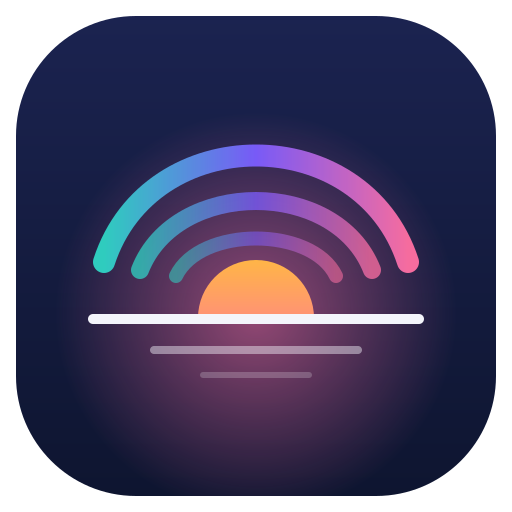Zorza OS</a>
    <nav class="nav-links" aria-label="Sekcje">
      <a href="#pulpit">Pulpit</a>
      <a href="#wyglad">Wygląd</a>
      <a href="#tapety">Tapety</a>
      <a href="#aplikacje">Aplikacje</a>
      <a href="#pobierz">Pobierz</a>
    </nav>
    <button class="theme-btn" id="themeBtn" type="button">Motyw: systemowy</button>
  </div>
</header>

<main id="top">
  <section class="hero" aria-labelledby="hero-title">
    <canvas id="aurora" aria-hidden="true"></canvas>
    <div class="wrap hero-inner">
      <p class="eyebrow">Wydanie 1.0 „Świt” · listopad 2026</p>
      <h1 id="hero-title">Zorza <span>OS</span></h1>
      <p class="lede">Polski Linux na co dzień. Debian 13 pod spodem, KDE Plasma 6 na wierzchu i wygląd dopracowany od menu startowego po ekran logowania.</p>
      <div class="cta-row">
        <a class="btn btn-primary" href="#pobierz">Pobierz Zorza OS</a>
        <a class="btn btn-ghost" href="#pulpit">Zobacz, jak startuje</a>
      </div>
      <p class="hero-meta">Debian 13 trixie · KDE Plasma 6.3 · amd64 + arm64 · UEFI i BIOS</p>
    </div>
    <div class="horizon" aria-hidden="true"></div>
  </section>

  <div class="showcase">
    <div class="wrap">
      <div class="screen">
        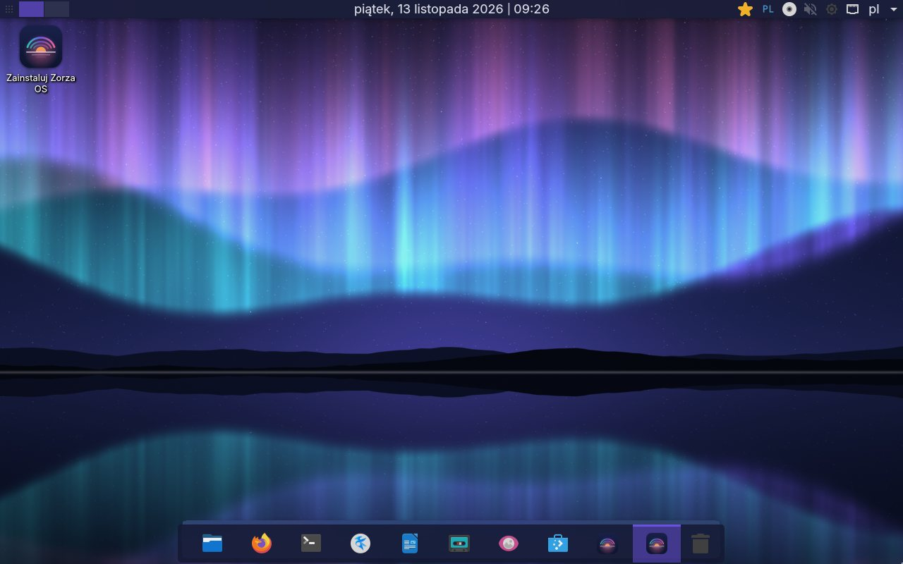
      </div>
      <p class="screen-caption">Prawdziwy zrzut ekranu: Zorza OS 1.0 amd64 uruchomiony z ISO w QEMU (UEFI), sesja live</p>
    </div>
  </div>

  <section class="section" id="pulpit" aria-labelledby="boot-title">
    <div class="wrap">
      <div class="section-head">
        <p class="eyebrow">Od przycisku zasilania do pulpitu</p>
        <h2 id="boot-title">Każdy ekran po drodze wygląda jak część jednego systemu</h2>
        <p>Menu startowe, animacja ładowania i pulpit mają tę samą paletę, krój pisma i logo. Bez przypadkowych ekranów z innej bajki.</p>
      </div>
      <div class="boot">
        <figure>
          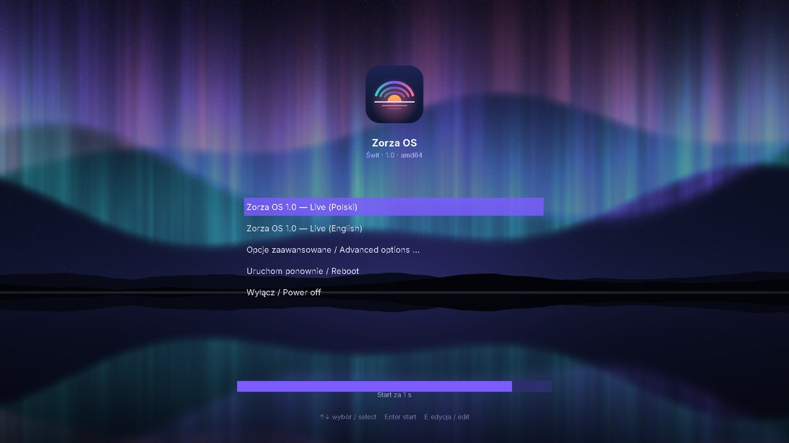
          <figcaption><b>KROK 1 · GRUB</b><strong>Wybierz język przy starcie</strong><span>Polski albo English, tryb bezpieczny grafiki i ładowanie do RAM. Ten sam motyw w UEFI i w BIOS.</span></figcaption>
        </figure>
        <figure>
          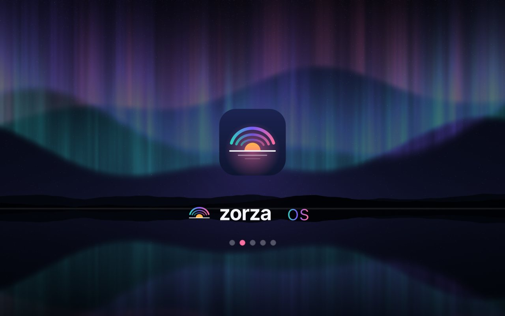
          <figcaption><b>KROK 2 · PLYMOUTH</b><strong>Spokojne ładowanie</strong><span>Pulsująca poświata, logo i wędrujący punkt akcentu. Obsługuje też hasło do zaszyfrowanego dysku.</span></figcaption>
        </figure>
        <figure>
          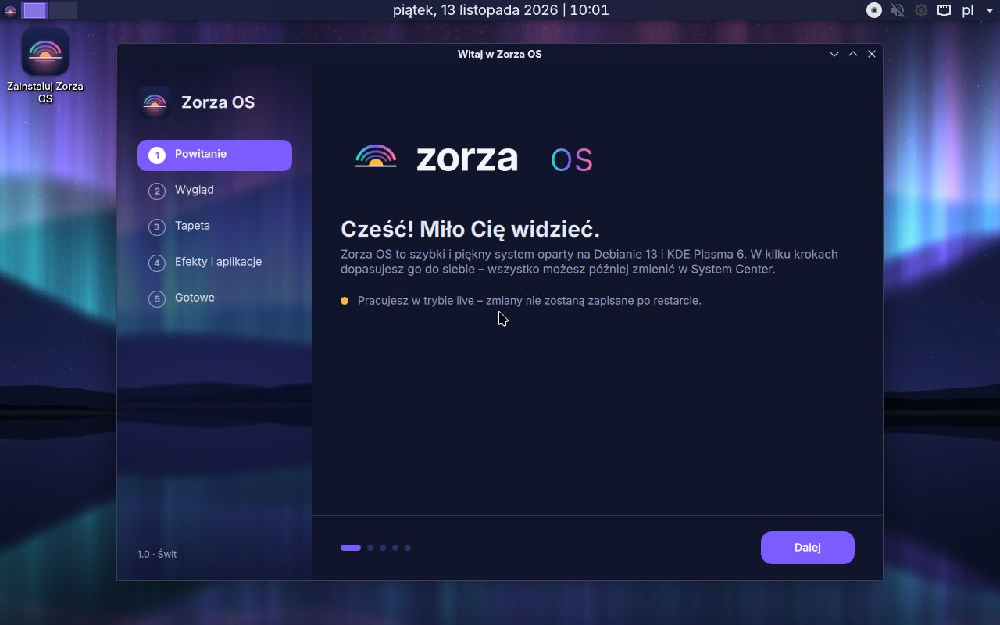
          <figcaption><b>KROK 3 · WITAJ</b><strong>Pulpit i aplikacja powitalna</strong><span>Po zalogowaniu Witaj pomaga wybrać motyw, akcent i tapetę. W trybie live ma też przycisk instalacji.</span></figcaption>
        </figure>
      </div>
    </div>
  </section>

  <hr class="horizon-rule">

  <section class="section" id="wyglad" aria-labelledby="look-title">
    <div class="wrap">
      <div class="section-head">
        <p class="eyebrow">Wygląd</p>
        <h2 id="look-title">Jasny albo ciemny, w jednym z sześciu kolorów</h2>
        <p>Kolor akcentu zmienia przyciski, zaznaczenia i ikony folderów naraz. Spróbuj tutaj: ta strona przełącza się tak samo jak system.</p>
      </div>
      <div class="look">
        <div class="look-controls">
          <div>
            <span class="control-label" id="accent-label">Kolor akcentu</span>
            <div class="swatches" role="group" aria-labelledby="accent-label" id="swatches"></div>
            <p class="accent-name" id="accentName">Fiolet zorzy · #7C5CFF</p>
          </div>
          <div>
            <span class="control-label" id="mode-label">Motyw</span>
            <div class="mode-switch" role="group" aria-labelledby="mode-label">
              <button type="button" data-mode="dark" id="modeDark">Ciemny</button>
              <button type="button" data-mode="light" id="modeLight">Jasny</button>
            </div>
          </div>
          <div class="folder-row" aria-hidden="true">
            <div class="folder"><small>Dokumenty</small></div>
            <div class="folder"><small>Obrazy</small></div>
            <div class="folder"><small>Muzyka</small></div>
          </div>
          <ul class="look-facts">
            <li>Globalne motywy Zorza Ciemny i Zorza Jasny dla KDE Plasma 6</li>
            <li>Ikony Papirus z folderami w kolorze akcentu</li>
            <li>Inter w interfejsie, JetBrains Mono w terminalu</li>
            <li>Rozmycie i animacje wyłączają się same, gdy brakuje akceleracji 3D</li>
          </ul>
        </div>
        <div class="look-shot">
          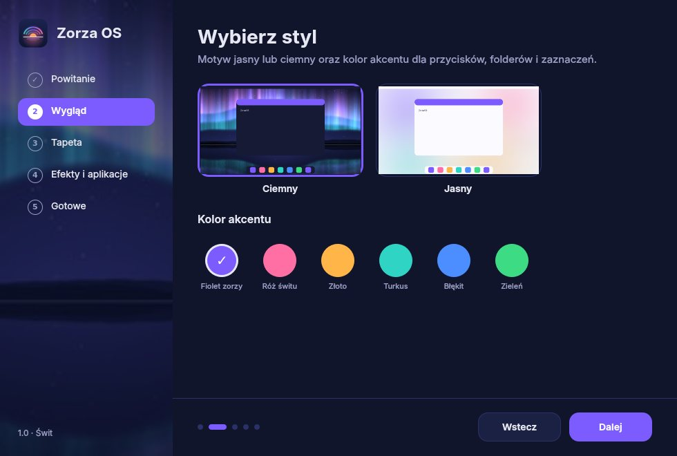
        </div>
      </div>
    </div>
  </section>

  <hr class="horizon-rule">

  <section class="section" id="tapety" aria-labelledby="wp-title">
    <div class="wrap">
      <div class="section-head">
        <p class="eyebrow">Tapety 3840 × 2160</p>
        <h2 id="wp-title">Dziewięć tapet narysowanych przez kod</h2>
        <p>Każda powstała z gradientów, kształtów i szumu w skrypcie Pythona, bez jednego zdjęcia. Horyzont zmienia się z porą dnia.</p>
      </div>

      <div class="phases">
        <div class="phase-view" id="phaseView">
          <span class="phase-badge" id="phaseBadge">Teraz u Ciebie: dzień</span>
          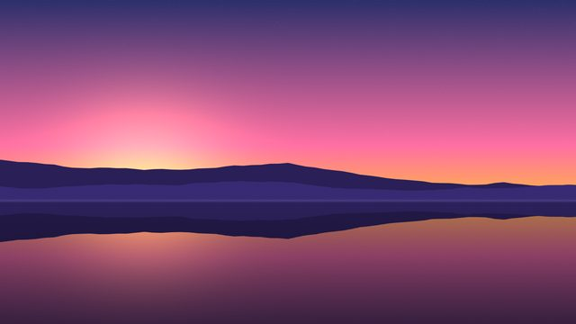
          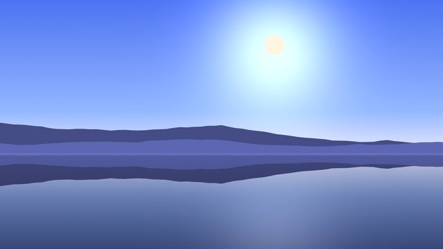
          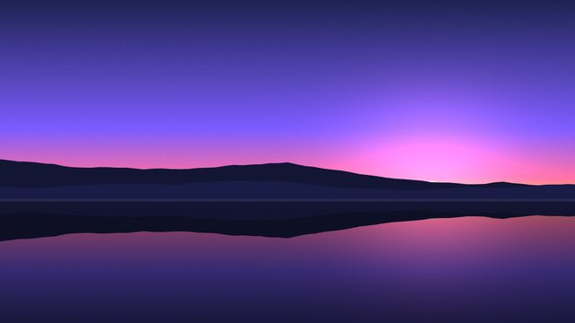
          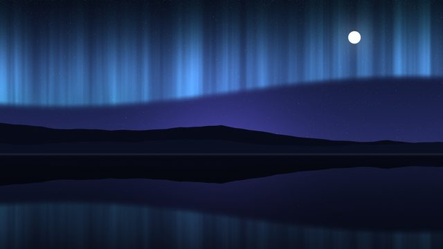
        </div>
        <div class="phase-panel">
          <h3>Horyzont, tapeta dynamiczna</h3>
          <p>Ta sama dolina w czterech porach dnia. Zorza sprawdza zegar co 10 minut i podmienia obraz. Latem dzień trwa od 7:00 do 20:00, zimą od 9:00 do 16:00.</p>
          <div class="timeline" role="group" aria-label="Pora dnia" id="timeline">
            <button type="button" data-phase="swit"><b>Świt</b><span>5–7 · 7–9</span></button>
            <button type="button" data-phase="dzien"><b>Dzień</b><span>7–20 · 9–16</span></button>
            <button type="button" data-phase="zmierzch"><b>Zmierzch</b><span>20–22 · 16–18</span></button>
            <button type="button" data-phase="noc"><b>Noc</b><span>pozostałe</span></button>
          </div>
          <p class="note">Godziny: lato (kwiecień–wrzesień) · zima. Wybór pory na stronie pokazuje podgląd, a system robi to sam.</p>
        </div>
      </div>

      <div class="gallery">
        <figure>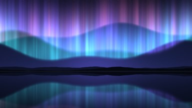<figcaption>Zorza <span>domyślna ciemna</span></figcaption></figure>
        <figure>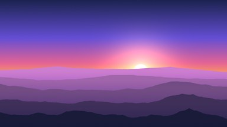<figcaption>Świt <span>wzgórza</span></figcaption></figure>
        <figure>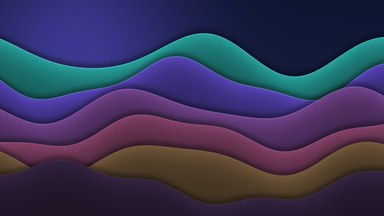<figcaption>Fale <span>wstęgi</span></figcaption></figure>
        <figure>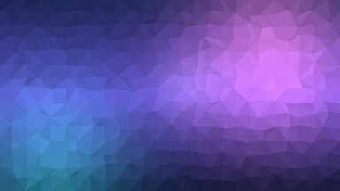<figcaption>Kryształ <span>low-poly</span></figcaption></figure>
        <figure>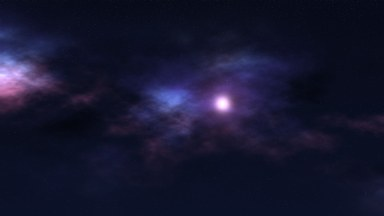<figcaption>Głębia <span>mgławica</span></figcaption></figure>
        <figure>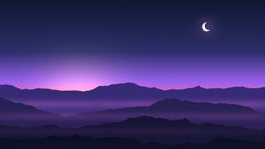<figcaption>Zmierzch <span>góry</span></figcaption></figure>
        <figure>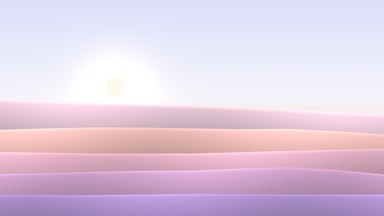<figcaption>Wydmy <span>jasna</span></figcaption></figure>
        <figure>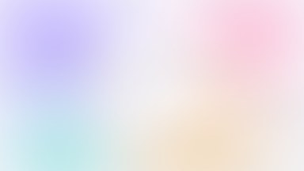<figcaption>Mgła <span>domyślna jasna</span></figcaption></figure>
      </div>
    </div>
  </section>

  <hr class="horizon-rule">

  <section class="section" id="aplikacje" aria-labelledby="apps-title">
    <div class="wrap">
      <div class="section-head">
        <p class="eyebrow">Aplikacje</p>
        <h2 id="apps-title">Gotowe do pracy od pierwszego uruchomienia</h2>
        <p>Wszystko, czego potrzeba na co dzień, jest już na pokładzie. Resztę doinstalujesz z Discover, który ma podłączony Flathub.</p>
      </div>
      <div class="apps">
        <dl class="app-groups">
          <div><dt>INTERNET</dt><dd>Firefox ESR</dd></div>
          <div><dt>BIURO</dt><dd>LibreOffice (Writer, Calc, Impress, Draw), Okular, Kate</dd></div>
          <div><dt>GRAFIKA</dt><dd>GIMP, Inkscape, Gwenview, Spectacle</dd></div>
          <div><dt>MULTIMEDIA</dt><dd>VLC, Elisa</dd></div>
          <div><dt>SYSTEM</dt><dd>Dolphin, Konsole z profilem Zorza, Ark, KCalc, Monitor systemu</dd></div>
          <div><dt>SKLEP</dt><dd>Discover: repozytoria Debiana i Flathub</dd></div>
          <div><dt>INSTALATOR</dt><dd>Calamares z brandingiem Zorzy, UEFI i BIOS, szyfrowanie LUKS</dd></div>
        </dl>
        <div class="own-apps">
          <div class="tabs" role="tablist" aria-label="Aplikacje Zorza">
            <button class="tab" role="tab" type="button" id="tab-center" aria-selected="true" aria-controls="ownShot" data-img="img/app-center.jpg" data-alt="System Center: informacje o sprzęcie, pamięci i dysku" data-text="System Center pokazuje sprzęt, pamięć i dysk, zmienia motyw, akcent i tapetę.">System Center</button>
            <button class="tab" role="tab" type="button" id="tab-updates" aria-selected="false" aria-controls="ownShot" data-img="img/app-updates.jpg" data-alt="System Center: aktualizacje jednym kliknięciem" data-text="Jeden przycisk aktualizuje pakiety Debiana i aplikacje Flatpak, a dziennik widać na żywo.">Aktualizacje</button>
            <button class="tab" role="tab" type="button" id="tab-wp" aria-selected="false" aria-controls="ownShot" data-img="img/app-wallpapers.jpg" data-alt="Aplikacja Witaj: wybór tapety" data-text="Witaj prowadzi przez wygląd w pięciu krokach i znika, gdy skończysz.">Witaj</button>
          </div>
          <div class="own-shot" id="ownShot" role="tabpanel">
            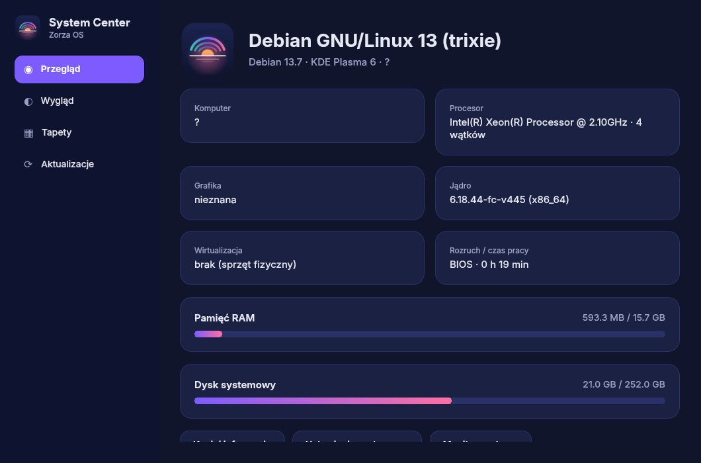
          </div>
          <p id="ownText">System Center pokazuje sprzęt, pamięć i dysk, zmienia motyw, akcent i tapetę.</p>
        </div>
      </div>
    </div>
  </section>

  <hr class="horizon-rule">

  <section class="section" id="pobierz" aria-labelledby="dl-title">
    <div class="wrap">
      <div class="section-head">
        <p class="eyebrow">Pobierz</p>
        <h2 id="dl-title">Dwa obrazy z jednego projektu</h2>
        <p>Wgraj ISO na pendrive (balenaEtcher, Rufus w trybie DD albo dd) albo uruchom je w VirtualBox jako Live CD z opcją instalacji.</p>
      </div>

      <div class="downloads">
        <article class="dl">
          <div class="dl-head"><h3>PC · amd64</h3><span class="pill ok">PRZETESTOWANY W QEMU</span></div>
          <dl>
            <dt>Plik</dt><dd class="mono">zorza-1.0-amd64.iso</dd>
            <dt>Rozmiar</dt><dd>2,8 GB</dd>
            <dt>Rozruch</dt><dd>UEFI i legacy BIOS (ISO hybrydowe)</dd>
            <dt>Dla</dt><dd>Komputery z Intel/AMD, VirtualBox na Windows i Linuksie</dd>
            <dt>SHA256</dt><dd class="mono">ed367e1ebc9026ce228a5250be775bb989fd1d83cb28d7f7eed1b3c7de02f935</dd>
          </dl>
          <div class="code"><span id="cmd-amd64">./build.command amd64</span><button class="copy" type="button" data-copy="cmd-amd64">Kopiuj</button></div>
        </article>
        <article class="dl">
          <div class="dl-head"><h3>Mac · arm64</h3><span class="pill wait">BUDOWANY W CI</span></div>
          <dl>
            <dt>Plik</dt><dd class="mono">zorza-1.0-arm64.iso</dd>
            <dt>Rozruch</dt><dd>UEFI</dd>
            <dt>Dla</dt><dd>Mac z Apple Silicon (M1–M4) w VirtualBox 7.1+, maszyny ARM64 z UEFI</dd>
            <dt>Uwaga</dt><dd>Działa tylko w maszynie wirtualnej. Mac nie uruchomi ISO z pendrive'a.</dd>
          </dl>
          <div class="code"><span id="cmd-arm64">./build.command arm64</span><button class="copy" type="button" data-copy="cmd-arm64">Kopiuj</button></div>
        </article>
      </div>
      <p class="note dl-note">Obrazy budujesz sam w Dockerze (Linux, macOS, WSL2) albo w GitHub Actions, który robi oba naraz. Gotowe pliki trafiają do katalogu <span class="mono">out/</span> razem z sumami SHA256.</p>

      <div class="vbox">
        <h3>Ustawienia VirtualBox</h3>
        <div class="table-wrap">
          <table>
            <thead><tr><th>Ustawienie</th><th>Windows (x86_64)</th><th>Mac z Apple Silicon</th></tr></thead>
            <tbody>
              <tr><td>Obraz</td><td class="mono">zorza-1.0-amd64.iso</td><td class="mono">zorza-1.0-arm64.iso</td></tr>
              <tr><td>Typ / wersja</td><td>Linux / Debian (64-bit)</td><td>Linux / Debian (ARM 64-bit)</td></tr>
              <tr><td>EFI</td><td>Włącz (działa też bez)</td><td>Włączone, wymagane</td></tr>
              <tr><td>RAM</td><td>4096 MB minimum, zalecane 8192 MB</td><td>4096 MB minimum, zalecane 8192 MB</td></tr>
              <tr><td>Procesory</td><td>2–4</td><td>2–4</td></tr>
              <tr><td>Grafika</td><td>VMSVGA, 128 MB, bez 3D</td><td>VMSVGA, 128 MB, bez 3D</td></tr>
              <tr><td>Dysk</td><td>25 GB VDI, dynamiczny</td><td>25 GB VDI, dynamiczny</td></tr>
              <tr><td>Dodatki gościa</td><td>Wbudowane (schowek, foldery)</td><td>Brak, rozdzielczość dopasowuje się sama</td></tr>
            </tbody>
          </table>
        </div>
        <p class="note">Instalację nienadzorowaną w kreatorze VirtualBox odznacz. Sesja live loguje się sama: użytkownik <span class="mono">live</span>, hasło <span class="mono">live</span>.</p>
      </div>
    </div>
  </section>

  <hr class="horizon-rule">

  <section class="section" aria-labelledby="spec-title">
    <div class="wrap">
      <div class="section-head">
        <p class="eyebrow">Pod maską</p>
        <h2 id="spec-title">Sprawdzone części, własne wykończenie</h2>
      </div>
      <div class="specs">
        <div class="spec"><b>BAZA</b><span>Debian 13 „trixie”</span></div>
        <div class="spec"><b>JĄDRO</b><span>Linux 6.12 LTS</span></div>
        <div class="spec"><b>PULPIT</b><span>KDE Plasma 6.3, Wayland + X11</span></div>
        <div class="spec"><b>BUDOWANIE</b><span>live-build w Dockerze</span></div>
        <div class="spec"><b>JĘZYK</b><span>polski, klawiatura PL, Europe/Warsaw</span></div>
        <div class="spec"><b>WIRTUALIZACJA</b><span>VMSVGA, virtio, SPICE, VirtualBox</span></div>
      </div>
    </div>
  </section>
</main>

<footer class="footer">
  <div class="wrap">
    <div class="palette" aria-label="Paleta Zorza">
      <div class="chip"><i style="--c:#0E1530"></i><b>Noc</b>#0E1530</div>
      <div class="chip"><i style="--c:#1B2350"></i><b>Głębia</b>#1B2350</div>
      <div class="chip"><i style="--c:#7C5CFF"></i><b>Fiolet zorzy</b>#7C5CFF</div>
      <div class="chip"><i style="--c:#FF6FA3"></i><b>Róż świtu</b>#FF6FA3</div>
      <div class="chip"><i style="--c:#FFB547"></i><b>Złoto</b>#FFB547</div>
      <div class="chip"><i style="--c:#2FD4C4"></i><b>Turkus</b>#2FD4C4</div>
      <div class="chip"><i style="--c:#F4F5FB"></i><b>Mgła</b>#F4F5FB</div>
    </div>
    <div class="foot-row">
      <span class="brand">Zorza OS 1.0 „Świt”</span>
      <span>Kod: GPL-3.0-or-later · Grafiki: CC BY-SA 4.0 · Pakiety Debiana na własnych licencjach</span>
    </div>
  </div>
</footer>

<script>
(function () {
  "use strict";
  var root = document.documentElement;
  var store = {
    get: function (k) { try { return localStorage.getItem(k); } catch (e) { return null; } },
    set: function (k, v) { try { localStorage.setItem(k, v); } catch (e) {} }
  };

  /* ---------------------------------------------------- akcent */
  var ACCENTS = [
    { id: "violet", name: "Fiolet zorzy", c: "#7C5CFF", ink: "#ffffff" },
    { id: "pink", name: "Róż świtu", c: "#FF6FA3", ink: "#1a0d16" },
    { id: "gold", name: "Złoto", c: "#FFB547", ink: "#241603" },
    { id: "teal", name: "Turkus", c: "#2FD4C4", ink: "#04201d" },
    { id: "blue", name: "Błękit", c: "#4C8DFF", ink: "#ffffff" },
    { id: "green", name: "Zieleń", c: "#3DDC84", ink: "#062213" }
  ];
  var sw = document.getElementById("swatches");
  var accentName = document.getElementById("accentName");
  function setAccent(id, save) {
    var a = ACCENTS.filter(function (x) { return x.id === id; })[0] || ACCENTS[0];
    root.style.setProperty("--accent", a.c);
    root.style.setProperty("--accent-ink", a.ink);
    accentName.textContent = a.name + " · " + a.c;
    Array.prototype.forEach.call(sw.children, function (b) { b.setAttribute("aria-pressed", String(b.dataset.id === a.id)); });
    if (save) store.set("zorza-accent", a.id);
    auroraAccent = a.c;
  }
  ACCENTS.forEach(function (a) {
    var b = document.createElement("button");
    b.type = "button"; b.className = "swatch"; b.dataset.id = a.id;
    b.style.setProperty("--c", a.c);
    b.setAttribute("aria-label", a.name);
    b.addEventListener("click", function () { setAccent(a.id, true); });
    sw.appendChild(b);
  });

  /* ---------------------------------------------------- motyw */
  var themeBtn = document.getElementById("themeBtn");
  var modeBtns = document.querySelectorAll("[data-mode]");
  var mq = window.matchMedia ? window.matchMedia("(prefers-color-scheme: dark)") : null;
  function effective() {
    var t = root.getAttribute("data-theme");
    if (t) return t;
    return mq && mq.matches ? "dark" : "light";
  }
  function paintTheme() {
    var t = root.getAttribute("data-theme");
    themeBtn.textContent = "Motyw: " + (t === "dark" ? "ciemny" : t === "light" ? "jasny" : "systemowy");
    var e = effective();
    modeBtns.forEach(function (b) { b.setAttribute("aria-pressed", String(b.dataset.mode === e)); });
  }
  function setTheme(t, save) {
    if (t) root.setAttribute("data-theme", t); else root.removeAttribute("data-theme");
    if (save) store.set("zorza-theme", t || "");
    paintTheme();
  }
  themeBtn.addEventListener("click", function () {
    var t = root.getAttribute("data-theme");
    setTheme(t === null ? "dark" : t === "dark" ? "light" : null, true);
  });
  modeBtns.forEach(function (b) { b.addEventListener("click", function () { setTheme(b.dataset.mode, true); }); });
  if (mq && mq.addEventListener) mq.addEventListener("change", paintTheme);

  /* ---------------------------------------------------- pora dnia (jak zorza-dynamic-wallpaper) */
  var PHASE_NAMES = { swit: "świt", dzien: "dzień", zmierzch: "zmierzch", noc: "noc" };
  function phaseNow(d) {
    var h = d.getHours(), m = d.getMonth() + 1;
    var rise = (m >= 4 && m <= 9) ? 5 : 7, set = (m >= 4 && m <= 9) ? 20 : 16;
    if (h >= rise && h < rise + 2) return "swit";
    if (h >= rise + 2 && h < set) return "dzien";
    if (h >= set && h < set + 2) return "zmierzch";
    return "noc";
  }
  var nowPhase = phaseNow(new Date());
  var badge = document.getElementById("phaseBadge");
  function showPhase(p) {
    document.querySelectorAll("#phaseView img").forEach(function (im) { im.classList.toggle("on", im.dataset.phase === p); });
    document.querySelectorAll("#timeline button").forEach(function (b) { b.setAttribute("aria-pressed", String(b.dataset.phase === p)); });
    badge.textContent = p === nowPhase ? "Teraz u Ciebie: " + PHASE_NAMES[p] : "Podgląd: " + PHASE_NAMES[p];
  }
  document.querySelectorAll("#timeline button").forEach(function (b) {
    b.addEventListener("click", function () { showPhase(b.dataset.phase); });
  });
  showPhase(nowPhase);

  /* ---------------------------------------------------- zakładki aplikacji */
  var tabs = document.querySelectorAll(".tab");
  tabs.forEach(function (t) {
    t.addEventListener("click", function () {
      tabs.forEach(function (x) { x.setAttribute("aria-selected", String(x === t)); });
      var img = document.getElementById("ownImg");
      img.src = t.dataset.img; img.alt = t.dataset.alt;
      document.getElementById("ownText").textContent = t.dataset.text;
    });
  });

  /* ---------------------------------------------------- kopiowanie poleceń */
  document.querySelectorAll(".copy").forEach(function (b) {
    b.addEventListener("click", function () {
      var el = document.getElementById(b.dataset.copy);
      var text = el.textContent;
      function done(ok) { b.textContent = ok ? "Skopiowano" : "Zaznaczono"; setTimeout(function () { b.textContent = "Kopiuj"; }, 1600); }
      function fallback() {
        var r = document.createRange(); r.selectNodeContents(el);
        var s = window.getSelection(); s.removeAllRanges(); s.addRange(r); done(false);
      }
      if (navigator.clipboard && navigator.clipboard.writeText) {
        navigator.clipboard.writeText(text).then(function () { done(true); }, fallback);
      } else { fallback(); }
    });
  });

  /* ---------------------------------------------------- zorza na canvasie */
  var auroraAccent = "#7C5CFF";
  var cv = document.getElementById("aurora");
  var ctx = cv.getContext("2d");
  var reduce = window.matchMedia && window.matchMedia("(prefers-reduced-motion: reduce)").matches;
  var W = 0, H = 0, dpr = 1, stars = [], running = true, t0 = performance.now();
  function hexToRgb(h) { var n = parseInt(h.slice(1), 16); return [(n >> 16) & 255, (n >> 8) & 255, n & 255]; }
  function resize() {
    dpr = Math.min(window.devicePixelRatio || 1, 2);
    W = cv.clientWidth; H = cv.clientHeight;
    cv.width = Math.round(W * dpr); cv.height = Math.round(H * dpr);
    ctx.setTransform(dpr, 0, 0, dpr, 0, 0);
    stars = [];
    var n = Math.round(W * H / 2600);
    for (var i = 0; i < n; i++) stars.push([Math.random() * W, Math.pow(Math.random(), 1.5) * H * .85, Math.random() * 1.1 + .2, Math.random() * 6.28]);
  }
  // deterministyczny „szum” smug: suma sinusów o różnych częstotliwościach
  function streak(x, t) {
    return .5 + .22 * Math.sin(x * .021 + t * .4) + .16 * Math.sin(x * .057 - t * .7) + .12 * Math.sin(x * .13 + t * 1.3);
  }
  function draw(now) {
    var t = (now - t0) / 1000;
    ctx.clearRect(0, 0, W, H);
    for (var i = 0; i < stars.length; i++) {
      var s = stars[i];
      ctx.globalAlpha = .35 + .35 * Math.sin(t * 1.3 + s[3]);
      ctx.fillStyle = "#EEF0FF";
      ctx.fillRect(s[0], s[1], s[2], s[2]);
    }
    ctx.globalAlpha = 1;
    ctx.globalCompositeOperation = "lighter";
    var layers = [
      { col: [47, 212, 196], base: .56, amp: .07, f: .0042, ph: 0, height: .42, a: .5 },
      { col: hexToRgb(auroraAccent), base: .48, amp: .09, f: .0031, ph: 2.1, height: .46, a: .55 },
      { col: [255, 111, 163], base: .40, amp: .06, f: .0052, ph: 4.2, height: .3, a: .32 }
    ];
    var step = W < 700 ? 3 : 4;
    for (var l = 0; l < layers.length; l++) {
      var L = layers[l], c = L.col;
      for (var x = 0; x < W; x += step) {
        var by = H * (L.base + L.amp * Math.sin(x * L.f + L.ph + t * .25) + .03 * Math.sin(x * L.f * 3.1 - t * .4));
        var k = streak(x + l * 300, t);
        var hgt = H * L.height * (.55 + .6 * k);
        var g = ctx.createLinearGradient(0, by - hgt, 0, by + 12);
        g.addColorStop(0, "rgba(" + c[0] + "," + c[1] + "," + c[2] + ",0)");
        g.addColorStop(.75, "rgba(" + c[0] + "," + c[1] + "," + c[2] + "," + (L.a * k * k).toFixed(3) + ")");
        g.addColorStop(1, "rgba(" + c[0] + "," + c[1] + "," + c[2] + ",0)");
        ctx.fillStyle = g;
        ctx.fillRect(x, by - hgt, step + .6, hgt + 12);
      }
    }
    ctx.globalCompositeOperation = "source-over";
    if (running && !reduce) requestAnimationFrame(draw);
  }
  function start() { running = true; if (!reduce) requestAnimationFrame(draw); else draw(performance.now()); }
  window.addEventListener("resize", function () { resize(); if (reduce) draw(performance.now()); });
  if ("IntersectionObserver" in window) {
    new IntersectionObserver(function (es) {
      var vis = es[0].isIntersecting;
      if (vis && !running) start(); else if (!vis) running = false;
    }).observe(cv);
  }
  document.addEventListener("visibilitychange", function () {
    if (document.hidden) running = false; else if (!running) start();
  });

  /* ---------------------------------------------------- start */
  var savedTheme = store.get("zorza-theme");
  if (savedTheme === "dark" || savedTheme === "light") setTheme(savedTheme, false); else paintTheme();
  setAccent(store.get("zorza-accent") || "violet", false);
  resize();
  start();
})();
</script>
